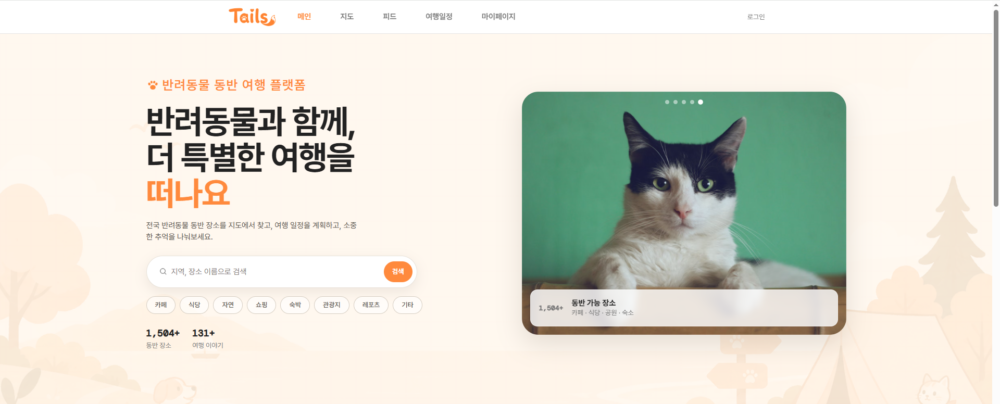
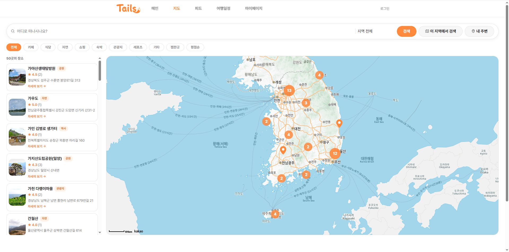
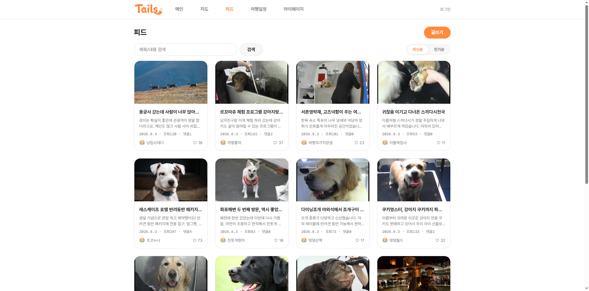
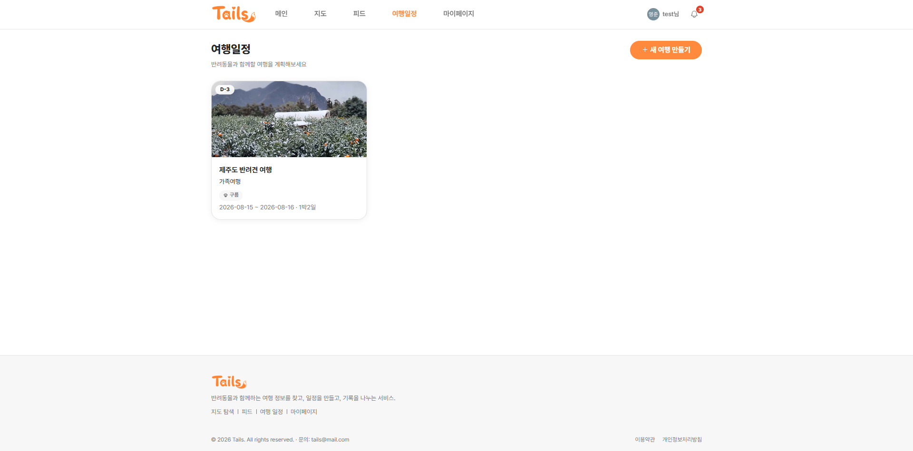
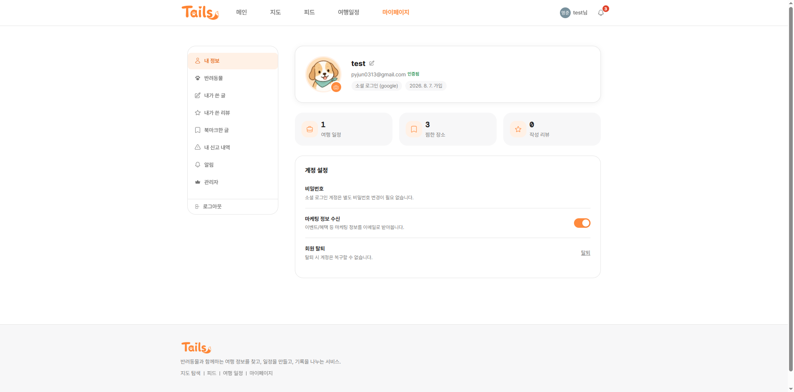

메인 프로젝트 · 팀 2인
Tails
반려동물 동반 여행 서비스
반려동물 동반이 가능한 장소를 검색하고, 여행 일정을 계획·공유할 수 있는 통합 여행 서비스입니다. 반려동물 동반 가능 장소 정보를 한 곳에서 찾기 어려운 문제에서 출발해, 검색부터 일정 계획·공유까지 한 번에 해결하는 것을 목표로 기획했습니다.
● 담당 역할
반려동물 동반 가능 장소 정보가 흩어져 있어 한 곳에서 찾고 계획하기 어려웠습니다.
기획, 장소 검색·추천 로직 설계, 여행 일정 백엔드, 지도·피드 프론트엔드 구현
검색·개인화 추천·일정 공유까지 갖춘 서비스를 정식 배포하고 CI/CD로 운영 중
담당 기능 — 장소 키워드·카테고리·지역·반경 검색, 평점·찜 기반 랭킹 구현 · 찜·리뷰 이력 기반 콘텐츠 기반 개인화 추천(코사인 유사도) 구현 · 여행 일정 CRUD 및 최근접 이웃 알고리즘 기반 경로 최적화 추천 기능 구현 · TourAPI(한국관광공사) 연동을 통한 장소 데이터 동기화 · 프론트엔드 공통 인프라(axios, 라우팅) 및 지도·피드 화면 구현
● 주요 기능
장소 검색·추천
키워드·카테고리·지역·반경 검색, 평점·찜 기반 랭킹, 리뷰 이력 기반 개인화 추천(코사인 유사도)
지도 기반 탐색
키워드·카테고리·반경 조건으로 지도 위에서 바로 장소를 검색하고 상세 정보 확인
여행 일정 계획
일정 CRUD, 방문 장소 추가·순서 변경, 최근접 이웃 알고리즘 기반 경로 최적화 추천
TourAPI 연동
한국관광공사 TourAPI 연동으로 장소 데이터를 주기적으로 동기화
● 주요 화면
이미지를 클릭하면 확대해서 볼 수 있습니다.





● 시스템 구조
Architecture & ERD


React 정적 빌드와 Spring Boot API를 분리하고 Nginx가 정적 파일 서빙·API 리버스 프록시를 담당하는 구조. MySQL·Redis를 각각 데이터·세션 저장소로 사용. GitHub Actions로 빌드·테스트, Jenkins로 배포를 자동화하고 Docker Compose로 EC2에 배포합니다.
● 기술적 문제 해결
여행 세부 일정 조회 시 N+1 쿼리 발생
Problem 방문 장소가 많은 여행일수록 세부 일정 조회가 눈에 띄게 느려짐. 목록 조회 후 각 항목의 place 필드 접근마다 지연 로딩으로 쿼리가 추가 발생.
Approach 목록 조회 쿼리에 place를 fetch join으로 함께 가져오도록 수정.
Result 목록 1건당 N+1로 늘어나던 쿼리를 1번으로 통일. 방문 장소 20개 기준 로컬 실측 21개 → 1개 쿼리 (약 95% 감소).
로컬 실측: 방문 장소 20개인 여행 기준, Docker MySQL + Hibernate Statistics로 fetch join 적용 전/후 리포지토리를 직접 비교 측정
좋아요 동시 요청 시 500 에러 발생
Problem 같은 게시글에 좋아요 요청이 거의 동시에 들어오면 낙관적 락 충돌이 다른 예외와 함께 500 서버 오류로 처리됨.
Approach ObjectOptimisticLockingFailureException만 따로 잡아 재시도 가능한 409로 응답하도록 전용 핸들러 추가.
Result 일시적 충돌을 서버 오류가 아닌 재시도 가능한 응답으로 명확히 구분.
Refresh Token을 Access Token으로 오용 가능한 취약점
Problem Access·Refresh Token이 같은 시크릿 키로 서명돼 있어, Refresh Token을 Authorization 헤더에 넣어도 일반 API가 호출됨.
Approach 토큰 발급 시 type 클레임을 추가해 access/refresh를 구분하고, 필터·재발급 API에서 토큰 종류를 검증하도록 수정.
Result 탈취된 Refresh Token으로 일반 API를 호출하는 경로를 차단.
존재하지 않는 경로 요청 시 500 에러 발생
Problem 오타 난 URL이나 없는 경로로 요청하면 404가 아니라 500 에러 발생.
Approach NoResourceFoundException 전용 핸들러를 추가해 404로 응답하도록 수정.
Result 존재하지 않는 리소스 요청이 명확한 404 응답으로 처리됨.